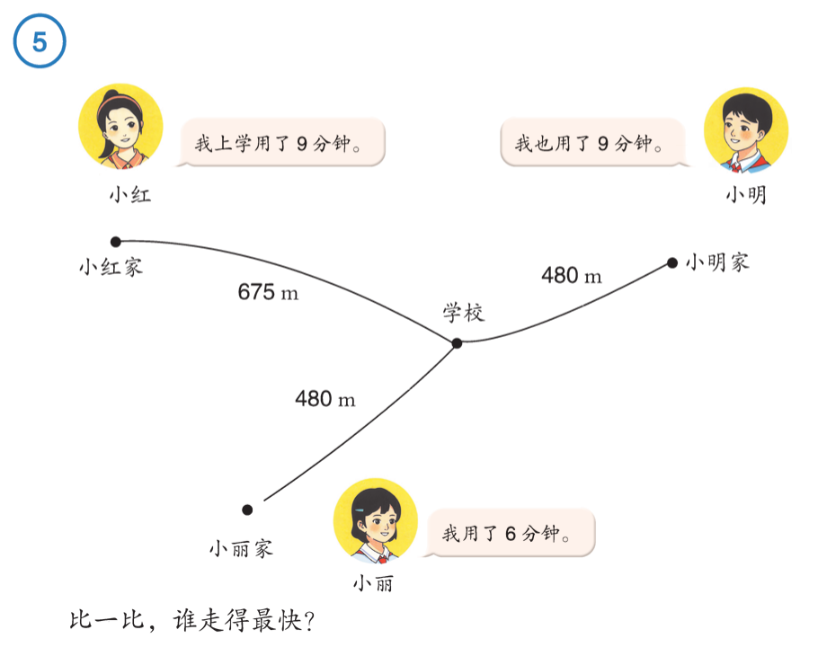
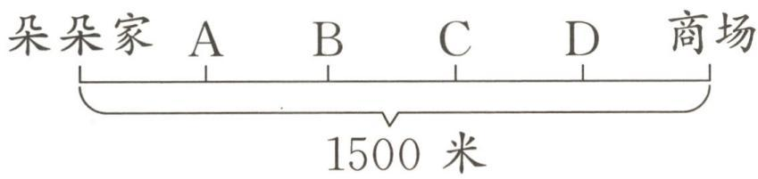
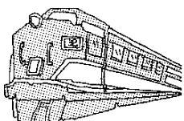
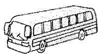
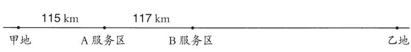

每一步算的是谁
今天：认识速度，把每一步算出的数用对地方。
共11道题，其中2道手写。
继续上次停下的题数学地图
四年级上册 · 整册地图
实践活动：1亿有多大 · 寻找宝藏
第四单元 · 今日路线

需要帮助
要比得公平，可以让时间相同，也可以让路程相同。你想怎样比？
再给一点帮助
把一段路程平均放进每一分钟：这一分钟走的路程，就是这里说的速度。选一种办法回题比较。
题源：人教版四上数学 第66—67页 例5
需要帮助
50米×8表示一共跑了多远？
再给一点帮助
把总路程平均分给2分钟，再把结果写成每分钟跑多远。

需要帮助
先算15分钟走了多远。图上从家到商场有几个相等的小段？
再给一点帮助
用家到商场的总路程求一小段多远，再从家出发找对应的位置。
题源：《53天天练》25秋人教四上 第6课时 数量关系（2）第1题
（1）小林每分钟走60米，他15分钟走多少米？
（2）蜜蜂每秒飞行5米，飞行600米需要多长时间？
需要帮助
看清问题：要找走了多远，还是用了多久？
再给一点帮助
每分钟走同样远，几分钟的路程就合起来；要找时间，可以看总路程里有几份每秒走的路。
题源：人教版四上数学 第67页 做一做第2题
可以休息，回来继续。

需要帮助
里程表是从车辆开始使用后累计的里程，还是只记这一次？
再给一点帮助
可以把出发、到达读数看成同一条线上的两个点。这次开过的路，是两个点之间的一段；再对应这段所用的时间。
题源：人教版四上数学 第67—68页 例6
①贝贝步行的速度是54米/分。
②佳佳从家到书店用了12分钟。
③贝贝13:30从家出发，13:50到电影院。
④佳佳家距离书店960米。
（1）选择的信息：（ ）。（填序号）
（2）提出的问题：________？
（3）解答。
需要帮助
先读清要提出哪一种问题。你挑出的两条信息，属于同一个人吗？
再给一点帮助
先把每个人的信息分开放，再看哪一人同时给出了速度和一段可求出的时间。
题源：《53天天练》25秋人教四上 第6课时 数量关系（2）第4题


需要帮助
给每个时间找到它对应的交通工具。
再给一点帮助
可以分两行记：火车走的路；汽车走的路。最后回到题目问的整段路程。
题源：四上第四单元达标测试卷 第六大题第3题
胡老师说：“我骑自行车的速度是250米/分。”
需要帮助
算出的路程和学校距离，单位一样吗？
再给一点帮助
把两段路程都用米或都用千米表示，再看15分钟能走的路够不够。
题源：四上第四单元达标测试卷 第六大题第1题
手写 · 配套手写单

题源：人教版四上数学 第69页 练习十四第4题
题源：四上第四单元达标测试卷 原题
手写 · 配套手写单
题源：人教版四上数学 第69页 练习十四第5题
（1）下面各数中，最接近68亿的是（ ）。
A. 6789999999 B. 6799999990
C. 6800000002 D. 6800000020
（2）187□9010678≈187亿（省略亿位后面的尾数），□里可以填（ ）。
A. 1、2、3、4或5 B. 0、1、2、3或4
C. 6、7、8或9 D. 5、6、7、8或9
题源：《53天天练》25秋人教四上 第12课时 第4题
今天完成了
把手写的两道题拍照交给家长。
回到数学地图